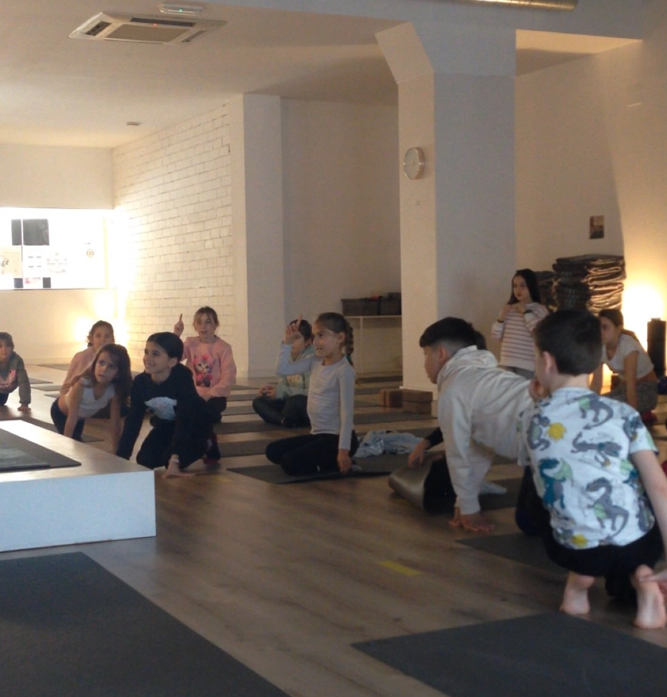
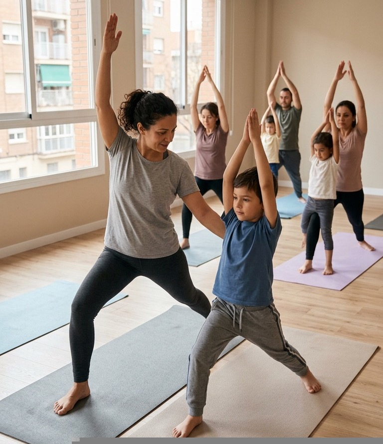
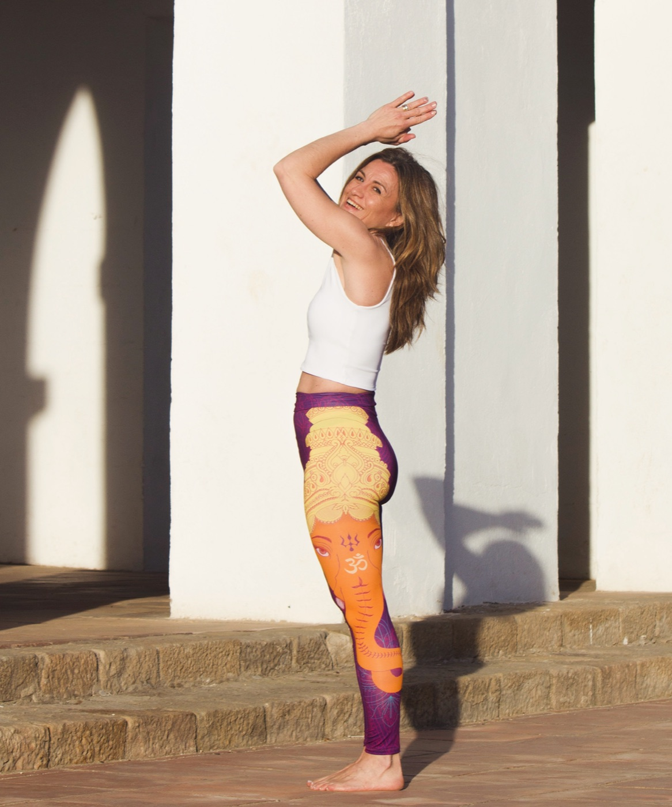

Data per determinar
Taller ioga en família
Una sessió especial per compartir moviment i presència en família.
Més informació →Ensenyem ioga real com a assignatura de vida des de la infància. El moviment, la respiració i l'atenció es converteixen en eines de creixement personal a totes les etapes de la vida.
Un mètode integral per cuidar el cos, la ment i les emocions.
Connectem amb el cos i la ment, a través de la respiració i la consciència corporal, activant la curiositat natural de cada persona. Asana i Pranayama.
L'autenticitat com a porta oberta a l'empatia.
Aprofundim en els fonaments del ioga de forma accessible, des de l'experiència, per a una aplicació intuïtiva i viva. Estil de vida. Filosofia.
La teoria per apropar-nos, no per allunyar-nos.
Treballem amb un repertori de tècniques del ioga, dinàmiques d'atenció, i seqüències adaptades a cada grup i moment vital.
Acompanyant, impulsant i protegint.

Un espai viu de moviment conscient al cor de les escoles, on descobreixen la respiració, la concentració i el benestar a través de diferents tècniques de ioga real.

Sessions pensades perquè infants i adults comparteixin un moment de presència, diversió i connexió. Una experiència única per viure junts.

El programa Ioga des de les Bases és un acompanyament personalitzat per conèixer la pràctica de ioga adaptat a tu, segons les teves necessitats i objectius.
Una sessió especial per compartir moviment i presència en família.
Més informació →Vine a provar una classe gratuïta. Omple el formulari i et contactarem per explicar-te com fer-ho.
Prova una classe →Inscripcions obertes per al curs 2026–2027. Places limitades per grup d'edat.
Vols apuntar-te? →
Els anys d'experiència et permeten crear un enfocament clar i provat. En el meu cas, és des de l'empatia i les ganes de compartir, donant eines que ens ajudin a viure millor.
Membre de la Federació Catalana de Ioga i inscrita al Registre Oficial de Professionals de l'Esport.
Els professors que formem l'equip de La Yogateca som persones amb vivències i experiència demostrada en l'acompanyament d'alumnes de totes les edats.
La nostra màxima
El ioga és la història de l'atenció